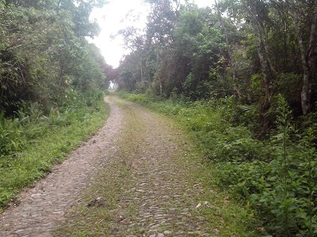

Post #1
Sá Fortes e um destrito de Antônio Carlos,e a foto a cima mostra
o caminho indo pra cabangu passando por sá fortes.
Sá Fortes X Cabangu
Meu email
Sá Fortes e um destrito de Antônio Carlos,e a foto a cima mostra
o caminho indo pra cabangu passando por sá fortes.
Sá Fortes X Cabangu
Meu email